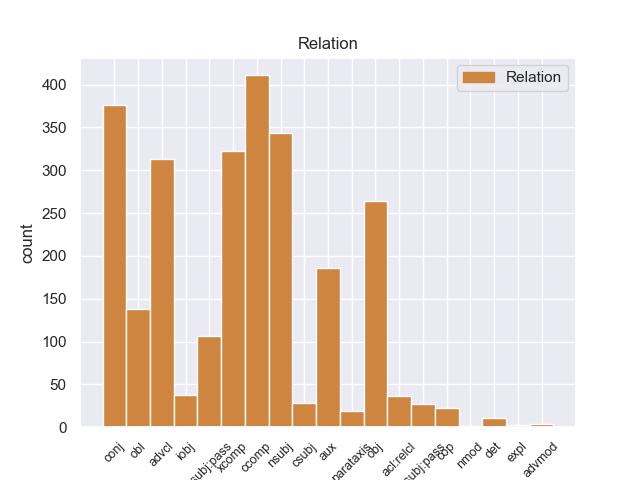
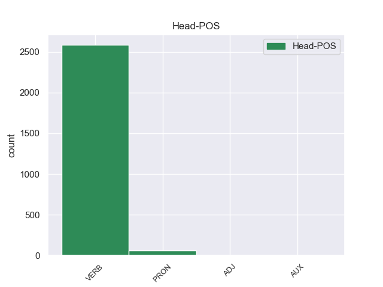
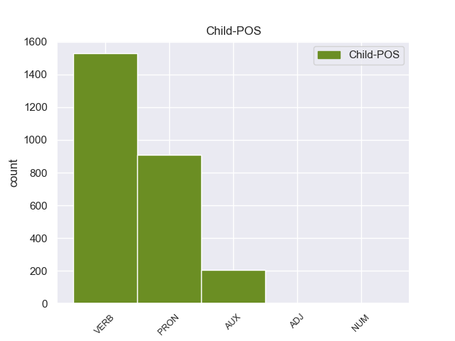

Distribution of features within this leaf



Agreement Rules sorted by frequency.
- When the dependent token is the nominal subject(nsubj) of the head token,
1 Αυτό αυτός PRON _ Case=Nom|Gender=Neut|Number=Sing|Person=3|PronType=Dem 2 nsubj _ _
2 μπορεί μπορώ VERB _ Aspect=Imp|Mood=Ind|Number=Sing|Person=3|Tense=Pres|VerbForm=Fin|Voice=Act 0 _ _ _
3 να _ _ _ _ 0 _ _ _
4 μην _ _ _ _ 0 _ _ _
5 οδηγήσει _ _ _ _ 0 _ _ _
6 σ _ _ _ _ 0 _ _ _
7 τη _ _ _ _ 0 _ _ _
8 λήξη _ _ _ _ 0 _ _ _
9 του _ _ _ _ 0 _ _ _
10 εν _ _ _ _ 0 _ _ _
11 λόγω _ _ _ _ 0 _ _ _
12 ζητήματος _ _ _ _ 0 _ _ _
13 αλλά _ _ _ _ 0 _ _ _
14 , _ _ _ _ 0 _ _ _
15 σ _ _ _ _ 0 _ _ _
16 τη _ _ _ _ 0 _ _ _
17 μορφή _ _ _ _ 0 _ _ _
18 υπό _ _ _ _ 0 _ _ _
19 την _ _ _ _ 0 _ _ _
20 οποία _ _ _ _ 0 _ _ _
21 την _ _ _ _ 0 _ _ _
22 λάβαμε _ _ _ _ 0 _ _ _
23 , _ _ _ _ 0 _ _ _
24 αυτή _ _ _ _ 0 _ _ _
25 η _ _ _ _ 0 _ _ _
26 αίτηση _ _ _ _ 0 _ _ _
27 άρσης _ _ _ _ 0 _ _ _
28 της _ _ _ _ 0 _ _ _
29 ασυλίας _ _ _ _ 0 _ _ _
30 ήταν _ _ _ _ 0 _ _ _
31 , _ _ _ _ 0 _ _ _
32 κατά _ _ _ _ 0 _ _ _
33 την _ _ _ _ 0 _ _ _
34 άποψη _ _ _ _ 0 _ _ _
35 της _ _ _ _ 0 _ _ _
36 Επιτροπής _ _ _ _ 0 _ _ _
37 Νομικών _ _ _ _ 0 _ _ _
38 Θεμάτων _ _ _ _ 0 _ _ _
39 , _ _ _ _ 0 _ _ _
40 απαράδεκτη _ _ _ _ 0 _ _ _
41 , _ _ _ _ 0 _ _ _
42 άποψη _ _ _ _ 0 _ _ _
43 την _ _ _ _ 0 _ _ _
44 οποία _ _ _ _ 0 _ _ _
45 συνιστώ _ _ _ _ 0 _ _ _
46 σ _ _ _ _ 0 _ _ _
47 το _ _ _ _ 0 _ _ _
48 Σώμα _ _ _ _ 0 _ _ _
49 να _ _ _ _ 0 _ _ _
50 υιοθετήσει _ _ _ _ 0 _ _ _
51 . _ _ _ _ 0 _ _ _
1 Συνεπώς _ _ _ _ 0 _ _ _
2 , _ _ _ _ 0 _ _ _
3 η _ _ _ _ 0 _ _ _
4 παρούσα _ _ _ _ 0 _ _ _
5 αίτηση _ _ _ _ 0 _ _ _
6 άρσης _ _ _ _ 0 _ _ _
7 της _ _ _ _ 0 _ _ _
8 ασυλίας _ _ _ _ 0 _ _ _
9 δεν _ _ _ _ 0 _ _ _
10 αφορά _ _ _ _ 0 _ _ _
11 το _ _ _ _ 0 _ _ _
12 ζήτημα _ _ _ _ 0 _ _ _
13 εάν _ _ _ _ 0 _ _ _
14 οι _ _ _ _ 0 _ _ _
15 διώξεις _ _ _ _ 0 _ _ _
16 μπορούν μπορώ VERB _ Aspect=Imp|Mood=Ind|Number=Plur|Person=3|Tense=Pres|VerbForm=Fin|Voice=Act 0 _ _ _
17 ή _ _ _ _ 0 _ _ _
18 πρέπει _ _ _ _ 0 _ _ _
19 να _ _ _ _ 0 _ _ _
20 συνεχιστούν συνεχινω VERB _ Aspect=Imp|Mood=Ind|Number=Plur|Person=3|Tense=Pres|VerbForm=Fin|Voice=Pass 16 conj _ _
21 με _ _ _ _ 0 _ _ _
22 βάση _ _ _ _ 0 _ _ _
23 το _ _ _ _ 0 _ _ _
24 γαλλικό _ _ _ _ 0 _ _ _
25 δίκαιο _ _ _ _ 0 _ _ _
26 . _ _ _ _ 0 _ _ _
1 Αυτό _ _ _ _ 0 _ _ _
2 μπορεί μπορώ VERB _ Aspect=Imp|Mood=Ind|Number=Sing|Person=3|Tense=Pres|VerbForm=Fin|Voice=Act 0 _ _ _
3 να _ _ _ _ 0 _ _ _
4 μην _ _ _ _ 0 _ _ _
5 οδηγήσει οδηγήσω VERB _ Aspect=Perf|Mood=Ind|Number=Sing|Person=3|VerbForm=Fin|Voice=Act 2 xcomp _ _
6 σ _ _ _ _ 0 _ _ _
7 τη _ _ _ _ 0 _ _ _
8 λήξη _ _ _ _ 0 _ _ _
9 του _ _ _ _ 0 _ _ _
10 εν _ _ _ _ 0 _ _ _
11 λόγω _ _ _ _ 0 _ _ _
12 ζητήματος _ _ _ _ 0 _ _ _
13 αλλά _ _ _ _ 0 _ _ _
14 , _ _ _ _ 0 _ _ _
15 σ _ _ _ _ 0 _ _ _
16 τη _ _ _ _ 0 _ _ _
17 μορφή _ _ _ _ 0 _ _ _
18 υπό _ _ _ _ 0 _ _ _
19 την _ _ _ _ 0 _ _ _
20 οποία _ _ _ _ 0 _ _ _
21 την _ _ _ _ 0 _ _ _
22 λάβαμε _ _ _ _ 0 _ _ _
23 , _ _ _ _ 0 _ _ _
24 αυτή _ _ _ _ 0 _ _ _
25 η _ _ _ _ 0 _ _ _
26 αίτηση _ _ _ _ 0 _ _ _
27 άρσης _ _ _ _ 0 _ _ _
28 της _ _ _ _ 0 _ _ _
29 ασυλίας _ _ _ _ 0 _ _ _
30 ήταν _ _ _ _ 0 _ _ _
31 , _ _ _ _ 0 _ _ _
32 κατά _ _ _ _ 0 _ _ _
33 την _ _ _ _ 0 _ _ _
34 άποψη _ _ _ _ 0 _ _ _
35 της _ _ _ _ 0 _ _ _
36 Επιτροπής _ _ _ _ 0 _ _ _
37 Νομικών _ _ _ _ 0 _ _ _
38 Θεμάτων _ _ _ _ 0 _ _ _
39 , _ _ _ _ 0 _ _ _
40 απαράδεκτη _ _ _ _ 0 _ _ _
41 , _ _ _ _ 0 _ _ _
42 άποψη _ _ _ _ 0 _ _ _
43 την _ _ _ _ 0 _ _ _
44 οποία _ _ _ _ 0 _ _ _
45 συνιστώ _ _ _ _ 0 _ _ _
46 σ _ _ _ _ 0 _ _ _
47 το _ _ _ _ 0 _ _ _
48 Σώμα _ _ _ _ 0 _ _ _
49 να _ _ _ _ 0 _ _ _
50 υιοθετήσει _ _ _ _ 0 _ _ _
51 . _ _ _ _ 0 _ _ _
1 Θα _ _ _ _ 0 _ _ _
2 ήθελα θέλω VERB _ Aspect=Imp|Mood=Ind|Number=Sing|Person=1|Tense=Past|VerbForm=Fin|Voice=Act 0 _ _ _
3 να _ _ _ _ 0 _ _ _
4 επιστήσω επιζω VERB _ Aspect=Perf|Mood=Ind|Number=Plur|Person=1|VerbForm=Fin|Voice=Act 2 ccomp _ _
5 την _ _ _ _ 0 _ _ _
6 προσοχή _ _ _ _ 0 _ _ _
7 όλων _ _ _ _ 0 _ _ _
8 των _ _ _ _ 0 _ _ _
9 συναδέλφων _ _ _ _ 0 _ _ _
10 σ _ _ _ _ 0 _ _ _
11 το _ _ _ _ 0 _ _ _
12 γεγονός _ _ _ _ 0 _ _ _
13 ότι _ _ _ _ 0 _ _ _
14 , _ _ _ _ 0 _ _ _
15 εάν _ _ _ _ 0 _ _ _
16 υπάρχουν _ _ _ _ 0 _ _ _
17 κάποιες _ _ _ _ 0 _ _ _
18 ελευθερίες _ _ _ _ 0 _ _ _
19 οι _ _ _ _ 0 _ _ _
20 οποίες _ _ _ _ 0 _ _ _
21 είναι _ _ _ _ 0 _ _ _
22 ζωτικής _ _ _ _ 0 _ _ _
23 σημασίας _ _ _ _ 0 _ _ _
24 για _ _ _ _ 0 _ _ _
25 την _ _ _ _ 0 _ _ _
26 άσκηση _ _ _ _ 0 _ _ _
27 του _ _ _ _ 0 _ _ _
28 λειτουργήματος _ _ _ _ 0 _ _ _
29 της _ _ _ _ 0 _ _ _
30 δημόσιας _ _ _ _ 0 _ _ _
31 εκπροσώπησης _ _ _ _ 0 _ _ _
32 , _ _ _ _ 0 _ _ _
33 ιδίως _ _ _ _ 0 _ _ _
34 για _ _ _ _ 0 _ _ _
35 ένα _ _ _ _ 0 _ _ _
36 Κοινοβούλιο _ _ _ _ 0 _ _ _
37 σαν _ _ _ _ 0 _ _ _
38 το _ _ _ _ 0 _ _ _
39 δικό _ _ _ _ 0 _ _ _
40 μας _ _ _ _ 0 _ _ _
41 , _ _ _ _ 0 _ _ _
42 η _ _ _ _ 0 _ _ _
43 ελευθερία _ _ _ _ 0 _ _ _
44 της _ _ _ _ 0 _ _ _
45 επικοινωνίας _ _ _ _ 0 _ _ _
46 με _ _ _ _ 0 _ _ _
47 άλλους _ _ _ _ 0 _ _ _
48 πολίτες _ _ _ _ 0 _ _ _
49 και _ _ _ _ 0 _ _ _
50 με _ _ _ _ 0 _ _ _
51 τους _ _ _ _ 0 _ _ _
52 πολίτες _ _ _ _ 0 _ _ _
53 τρίτων _ _ _ _ 0 _ _ _
54 χωρών _ _ _ _ 0 _ _ _
55 , _ _ _ _ 0 _ _ _
56 καθώς _ _ _ _ 0 _ _ _
57 και _ _ _ _ 0 _ _ _
58 η _ _ _ _ 0 _ _ _
59 ελευθερία _ _ _ _ 0 _ _ _
60 μετακίνησης _ _ _ _ 0 _ _ _
61 , _ _ _ _ 0 _ _ _
62 είναι _ _ _ _ 0 _ _ _
63 κρίσιμες _ _ _ _ 0 _ _ _
64 για _ _ _ _ 0 _ _ _
65 τη _ _ _ _ 0 _ _ _
66 διεκπεραίωση _ _ _ _ 0 _ _ _
67 του _ _ _ _ 0 _ _ _
68 έργου _ _ _ _ 0 _ _ _
69 μας _ _ _ _ 0 _ _ _
70 . _ _ _ _ 0 _ _ _
1 Τόσο _ _ _ _ 0 _ _ _
2 το _ _ _ _ 0 _ _ _
3 ζήτημα _ _ _ _ 0 _ _ _
4 της _ _ _ _ 0 _ _ _
5 ασυλίας _ _ _ _ 0 _ _ _
6 όσο _ _ _ _ 0 _ _ _
7 και _ _ _ _ 0 _ _ _
8 η _ _ _ _ 0 _ _ _
9 αίτηση _ _ _ _ 0 _ _ _
10 για _ _ _ _ 0 _ _ _
11 άρση _ _ _ _ 0 _ _ _
12 της _ _ _ _ 0 _ _ _
13 έχουν έχω VERB _ Aspect=Imp|Mood=Ind|Number=Plur|Person=3|Tense=Pres|VerbForm=Fin|Voice=Act 0 _ _ _
14 σχέση _ _ _ _ 0 _ _ _
15 μόνο _ _ _ _ 0 _ _ _
16 με _ _ _ _ 0 _ _ _
17 το _ _ _ _ 0 _ _ _
18 εάν _ _ _ _ 0 _ _ _
19 το _ _ _ _ 0 _ _ _
20 Δικαστήριο _ _ _ _ 0 _ _ _
21 μπορεί μπορώ VERB _ Aspect=Imp|Mood=Ind|Number=Sing|Person=3|Tense=Pres|VerbForm=Fin|Voice=Act 13 advcl _ _
22 να _ _ _ _ 0 _ _ _
23 εκδώσει _ _ _ _ 0 _ _ _
24 δεσμευτικά _ _ _ _ 0 _ _ _
25 βουλεύματα _ _ _ _ 0 _ _ _
26 για _ _ _ _ 0 _ _ _
27 τον _ _ _ _ 0 _ _ _
28 περιορισμό _ _ _ _ 0 _ _ _
29 της _ _ _ _ 0 _ _ _
30 ελεύθερης _ _ _ _ 0 _ _ _
31 μετακίνησης _ _ _ _ 0 _ _ _
32 των _ _ _ _ 0 _ _ _
33 βουλευτών _ _ _ _ 0 _ _ _
34 του _ _ _ _ 0 _ _ _
35 Ευρωπαϊκού _ _ _ _ 0 _ _ _
36 Κοινοβουλίου _ _ _ _ 0 _ _ _
37 ή _ _ _ _ 0 _ _ _
38 την _ _ _ _ 0 _ _ _
39 ελευθερία _ _ _ _ 0 _ _ _
40 τους _ _ _ _ 0 _ _ _
41 να _ _ _ _ 0 _ _ _
42 έρχονται _ _ _ _ 0 _ _ _
43 σε _ _ _ _ 0 _ _ _
44 επικοινωνία _ _ _ _ 0 _ _ _
45 με _ _ _ _ 0 _ _ _
46 άλλα _ _ _ _ 0 _ _ _
47 πρόσωπα _ _ _ _ 0 _ _ _
48 . _ _ _ _ 0 _ _ _
1 Αυτό _ _ _ _ 0 _ _ _
2 μπορεί _ _ _ _ 0 _ _ _
3 να _ _ _ _ 0 _ _ _
4 μην _ _ _ _ 0 _ _ _
5 οδηγήσει _ _ _ _ 0 _ _ _
6 σ _ _ _ _ 0 _ _ _
7 τη _ _ _ _ 0 _ _ _
8 λήξη _ _ _ _ 0 _ _ _
9 του _ _ _ _ 0 _ _ _
10 εν _ _ _ _ 0 _ _ _
11 λόγω _ _ _ _ 0 _ _ _
12 ζητήματος _ _ _ _ 0 _ _ _
13 αλλά _ _ _ _ 0 _ _ _
14 , _ _ _ _ 0 _ _ _
15 σ _ _ _ _ 0 _ _ _
16 τη _ _ _ _ 0 _ _ _
17 μορφή _ _ _ _ 0 _ _ _
18 υπό _ _ _ _ 0 _ _ _
19 την _ _ _ _ 0 _ _ _
20 οποία _ _ _ _ 0 _ _ _
21 την _ _ _ _ 0 _ _ _
22 λάβαμε _ _ _ _ 0 _ _ _
23 , _ _ _ _ 0 _ _ _
24 αυτή _ _ _ _ 0 _ _ _
25 η _ _ _ _ 0 _ _ _
26 αίτηση _ _ _ _ 0 _ _ _
27 άρσης _ _ _ _ 0 _ _ _
28 της _ _ _ _ 0 _ _ _
29 ασυλίας _ _ _ _ 0 _ _ _
30 ήταν _ _ _ _ 0 _ _ _
31 , _ _ _ _ 0 _ _ _
32 κατά _ _ _ _ 0 _ _ _
33 την _ _ _ _ 0 _ _ _
34 άποψη _ _ _ _ 0 _ _ _
35 της _ _ _ _ 0 _ _ _
36 Επιτροπής _ _ _ _ 0 _ _ _
37 Νομικών _ _ _ _ 0 _ _ _
38 Θεμάτων _ _ _ _ 0 _ _ _
39 , _ _ _ _ 0 _ _ _
40 απαράδεκτη _ _ _ _ 0 _ _ _
41 , _ _ _ _ 0 _ _ _
42 άποψη _ _ _ _ 0 _ _ _
43 την _ _ _ _ 0 _ _ _
44 οποία οποίος PRON _ Case=Acc|Gender=Fem|Number=Sing|Person=3|PronType=Rel 50 obj _ _
45 συνιστώ _ _ _ _ 0 _ _ _
46 σ _ _ _ _ 0 _ _ _
47 το _ _ _ _ 0 _ _ _
48 Σώμα _ _ _ _ 0 _ _ _
49 να _ _ _ _ 0 _ _ _
50 υιοθετήσει υιοθετήζω VERB _ Aspect=Perf|Mood=Ind|Number=Sing|Person=3|VerbForm=Fin|Voice=Act 0 _ _ _
51 . _ _ _ _ 0 _ _ _
1 Συνεπώς _ _ _ _ 0 _ _ _
2 , _ _ _ _ 0 _ _ _
3 η _ _ _ _ 0 _ _ _
4 παρούσα _ _ _ _ 0 _ _ _
5 αίτηση _ _ _ _ 0 _ _ _
6 άρσης _ _ _ _ 0 _ _ _
7 της _ _ _ _ 0 _ _ _
8 ασυλίας _ _ _ _ 0 _ _ _
9 δεν _ _ _ _ 0 _ _ _
10 αφορά _ _ _ _ 0 _ _ _
11 το _ _ _ _ 0 _ _ _
12 ζήτημα _ _ _ _ 0 _ _ _
13 εάν _ _ _ _ 0 _ _ _
14 οι _ _ _ _ 0 _ _ _
15 διώξεις _ _ _ _ 0 _ _ _
16 μπορούν _ _ _ _ 0 _ _ _
17 ή _ _ _ _ 0 _ _ _
18 πρέπει πρέπει AUX _ Aspect=Imp|Mood=Ind|Number=Sing|Person=3|Tense=Pres|VerbForm=Fin|Voice=Act 20 aux _ _
19 να _ _ _ _ 0 _ _ _
20 συνεχιστούν συνεχινω VERB _ Aspect=Imp|Mood=Ind|Number=Plur|Person=3|Tense=Pres|VerbForm=Fin|Voice=Pass 0 _ _ _
21 με _ _ _ _ 0 _ _ _
22 βάση _ _ _ _ 0 _ _ _
23 το _ _ _ _ 0 _ _ _
24 γαλλικό _ _ _ _ 0 _ _ _
25 δίκαιο _ _ _ _ 0 _ _ _
26 . _ _ _ _ 0 _ _ _
1 πρόκειται _ _ _ _ 0 _ _ _
2 για _ _ _ _ 0 _ _ _
3 αυτό _ _ _ _ 0 _ _ _
4 το _ _ _ _ 0 _ _ _
5 οποίο οποίος PRON _ Case=Nom|Gender=Neut|Number=Sing|Person=3|PronType=Rel 6 nsubj:pass _ _
6 αποκαλύφθηκε αποκαλύώ VERB _ Aspect=Perf|Mood=Ind|Number=Sing|Person=3|Tense=Past|VerbForm=Fin|Voice=Pass 0 _ _ _
7 κατά _ _ _ _ 0 _ _ _
8 τη _ _ _ _ 0 _ _ _
9 διάρκεια _ _ _ _ 0 _ _ _
10 αυτής _ _ _ _ 0 _ _ _
11 της _ _ _ _ 0 _ _ _
12 διαδικασίας _ _ _ _ 0 _ _ _
13 , _ _ _ _ 0 _ _ _
14 ότι _ _ _ _ 0 _ _ _
15 ο _ _ _ _ 0 _ _ _
16 Εισαγγελέας _ _ _ _ 0 _ _ _
17 κάποια _ _ _ _ 0 _ _ _
18 στιγμή _ _ _ _ 0 _ _ _
19 ζήτησε _ _ _ _ 0 _ _ _
20 από _ _ _ _ 0 _ _ _
21 την _ _ _ _ 0 _ _ _
22 Πρόεδρο _ _ _ _ 0 _ _ _
23 του _ _ _ _ 0 _ _ _
24 Σώματος _ _ _ _ 0 _ _ _
25 , _ _ _ _ 0 _ _ _
26 την _ _ _ _ 0 _ _ _
27 προκάτοχό _ _ _ _ 0 _ _ _
28 σας _ _ _ _ 0 _ _ _
29 , _ _ _ _ 0 _ _ _
30 λεπτομέρειες _ _ _ _ 0 _ _ _
31 για _ _ _ _ 0 _ _ _
32 την _ _ _ _ 0 _ _ _
33 ψήφο _ _ _ _ 0 _ _ _
34 που _ _ _ _ 0 _ _ _
35 έχουν _ _ _ _ 0 _ _ _
36 δώσει _ _ _ _ 0 _ _ _
37 οι _ _ _ _ 0 _ _ _
38 δύο _ _ _ _ 0 _ _ _
39 συγκεκριμένοι _ _ _ _ 0 _ _ _
40 βουλευτές _ _ _ _ 0 _ _ _
41 προκειμένου _ _ _ _ 0 _ _ _
42 να _ _ _ _ 0 _ _ _
43 διευκρινιστεί _ _ _ _ 0 _ _ _
44 περαιτέρω _ _ _ _ 0 _ _ _
45 η _ _ _ _ 0 _ _ _
46 πιθανότητα _ _ _ _ 0 _ _ _
47 να _ _ _ _ 0 _ _ _
48 είχαν _ _ _ _ 0 _ _ _
49 ασκήσει _ _ _ _ 0 _ _ _
50 αθέμιτη _ _ _ _ 0 _ _ _
51 επιρροή _ _ _ _ 0 _ _ _
52 . _ _ _ _ 0 _ _ _
1 πρόκειται πρόκειται VERB _ Aspect=Imp|Mood=Ind|Number=Sing|Person=3|Tense=Pres|VerbForm=Fin|Voice=Pass 0 _ _ _
2 για _ _ _ _ 0 _ _ _
3 αυτό αυτός PRON _ Case=Acc|Gender=Neut|Number=Sing|Person=3|PronType=Dem 1 obl _ _
4 το _ _ _ _ 0 _ _ _
5 οποίο _ _ _ _ 0 _ _ _
6 αποκαλύφθηκε _ _ _ _ 0 _ _ _
7 κατά _ _ _ _ 0 _ _ _
8 τη _ _ _ _ 0 _ _ _
9 διάρκεια _ _ _ _ 0 _ _ _
10 αυτής _ _ _ _ 0 _ _ _
11 της _ _ _ _ 0 _ _ _
12 διαδικασίας _ _ _ _ 0 _ _ _
13 , _ _ _ _ 0 _ _ _
14 ότι _ _ _ _ 0 _ _ _
15 ο _ _ _ _ 0 _ _ _
16 Εισαγγελέας _ _ _ _ 0 _ _ _
17 κάποια _ _ _ _ 0 _ _ _
18 στιγμή _ _ _ _ 0 _ _ _
19 ζήτησε _ _ _ _ 0 _ _ _
20 από _ _ _ _ 0 _ _ _
21 την _ _ _ _ 0 _ _ _
22 Πρόεδρο _ _ _ _ 0 _ _ _
23 του _ _ _ _ 0 _ _ _
24 Σώματος _ _ _ _ 0 _ _ _
25 , _ _ _ _ 0 _ _ _
26 την _ _ _ _ 0 _ _ _
27 προκάτοχό _ _ _ _ 0 _ _ _
28 σας _ _ _ _ 0 _ _ _
29 , _ _ _ _ 0 _ _ _
30 λεπτομέρειες _ _ _ _ 0 _ _ _
31 για _ _ _ _ 0 _ _ _
32 την _ _ _ _ 0 _ _ _
33 ψήφο _ _ _ _ 0 _ _ _
34 που _ _ _ _ 0 _ _ _
35 έχουν _ _ _ _ 0 _ _ _
36 δώσει _ _ _ _ 0 _ _ _
37 οι _ _ _ _ 0 _ _ _
38 δύο _ _ _ _ 0 _ _ _
39 συγκεκριμένοι _ _ _ _ 0 _ _ _
40 βουλευτές _ _ _ _ 0 _ _ _
41 προκειμένου _ _ _ _ 0 _ _ _
42 να _ _ _ _ 0 _ _ _
43 διευκρινιστεί _ _ _ _ 0 _ _ _
44 περαιτέρω _ _ _ _ 0 _ _ _
45 η _ _ _ _ 0 _ _ _
46 πιθανότητα _ _ _ _ 0 _ _ _
47 να _ _ _ _ 0 _ _ _
48 είχαν _ _ _ _ 0 _ _ _
49 ασκήσει _ _ _ _ 0 _ _ _
50 αθέμιτη _ _ _ _ 0 _ _ _
51 επιρροή _ _ _ _ 0 _ _ _
52 . _ _ _ _ 0 _ _ _
1 από _ _ _ _ 0 _ _ _
2 τα _ _ _ _ 0 _ _ _
3 δε _ _ _ _ 0 _ _ _
4 έγγραφα _ _ _ _ 0 _ _ _
5 της _ _ _ _ 0 _ _ _
6 υπόθεσης _ _ _ _ 0 _ _ _
7 προκύπτει προκύω VERB _ Aspect=Imp|Mood=Ind|Number=Sing|Person=3|Tense=Pres|VerbForm=Fin|Voice=Pass 0 _ _ _
8 ότι _ _ _ _ 0 _ _ _
9 δεν _ _ _ _ 0 _ _ _
10 φαίνεται φαίνομαι VERB _ Aspect=Imp|Mood=Ind|Number=Sing|Person=3|Tense=Pres|VerbForm=Fin|Voice=Act 7 csubj:pass _ _
11 να _ _ _ _ 0 _ _ _
12 έχει _ _ _ _ 0 _ _ _
13 ληφθεί _ _ _ _ 0 _ _ _
14 υπόψη _ _ _ _ 0 _ _ _
15 η _ _ _ _ 0 _ _ _
16 σύσταση _ _ _ _ 0 _ _ _
17 να _ _ _ _ 0 _ _ _
18 διαβιβαστεί _ _ _ _ 0 _ _ _
19 η _ _ _ _ 0 _ _ _
20 αίτηση _ _ _ _ 0 _ _ _
21 άρσης _ _ _ _ 0 _ _ _
22 της _ _ _ _ 0 _ _ _
23 ασυλίας _ _ _ _ 0 _ _ _
24 μόνον _ _ _ _ 0 _ _ _
25 επί _ _ _ _ 0 _ _ _
26 τη _ _ _ _ 0 _ _ _
27 βάσει _ _ _ _ 0 _ _ _
28 ακριβέστερου _ _ _ _ 0 _ _ _
29 προσδιορισμού _ _ _ _ 0 _ _ _
30 όσον _ _ _ _ 0 _ _ _
31 αφορά _ _ _ _ 0 _ _ _
32 τους _ _ _ _ 0 _ _ _
33 τόπους _ _ _ _ 0 _ _ _
34 και _ _ _ _ 0 _ _ _
35 τα _ _ _ _ 0 _ _ _
36 πρόσωπα _ _ _ _ 0 _ _ _
37 που _ _ _ _ 0 _ _ _
38 εμπλέκονται _ _ _ _ 0 _ _ _
39 σ _ _ _ _ 0 _ _ _
40 την _ _ _ _ 0 _ _ _
41 υπόθεση _ _ _ _ 0 _ _ _
42 . _ _ _ _ 0 _ _ _
1 πρόκειται _ _ _ _ 0 _ _ _
2 για _ _ _ _ 0 _ _ _
3 αυτό αυτός PRON _ Case=Acc|Gender=Neut|Number=Sing|Person=3|PronType=Dem 0 _ _ _
4 το _ _ _ _ 0 _ _ _
5 οποίο _ _ _ _ 0 _ _ _
6 αποκαλύφθηκε _ _ _ _ 0 _ _ _
7 κατά _ _ _ _ 0 _ _ _
8 τη _ _ _ _ 0 _ _ _
9 διάρκεια _ _ _ _ 0 _ _ _
10 αυτής _ _ _ _ 0 _ _ _
11 της _ _ _ _ 0 _ _ _
12 διαδικασίας _ _ _ _ 0 _ _ _
13 , _ _ _ _ 0 _ _ _
14 ότι _ _ _ _ 0 _ _ _
15 ο _ _ _ _ 0 _ _ _
16 Εισαγγελέας _ _ _ _ 0 _ _ _
17 κάποια _ _ _ _ 0 _ _ _
18 στιγμή _ _ _ _ 0 _ _ _
19 ζήτησε ζήώ VERB _ Aspect=Perf|Mood=Ind|Number=Sing|Person=3|Tense=Past|VerbForm=Fin|Voice=Act 3 acl:relcl _ _
20 από _ _ _ _ 0 _ _ _
21 την _ _ _ _ 0 _ _ _
22 Πρόεδρο _ _ _ _ 0 _ _ _
23 του _ _ _ _ 0 _ _ _
24 Σώματος _ _ _ _ 0 _ _ _
25 , _ _ _ _ 0 _ _ _
26 την _ _ _ _ 0 _ _ _
27 προκάτοχό _ _ _ _ 0 _ _ _
28 σας _ _ _ _ 0 _ _ _
29 , _ _ _ _ 0 _ _ _
30 λεπτομέρειες _ _ _ _ 0 _ _ _
31 για _ _ _ _ 0 _ _ _
32 την _ _ _ _ 0 _ _ _
33 ψήφο _ _ _ _ 0 _ _ _
34 που _ _ _ _ 0 _ _ _
35 έχουν _ _ _ _ 0 _ _ _
36 δώσει _ _ _ _ 0 _ _ _
37 οι _ _ _ _ 0 _ _ _
38 δύο _ _ _ _ 0 _ _ _
39 συγκεκριμένοι _ _ _ _ 0 _ _ _
40 βουλευτές _ _ _ _ 0 _ _ _
41 προκειμένου _ _ _ _ 0 _ _ _
42 να _ _ _ _ 0 _ _ _
43 διευκρινιστεί _ _ _ _ 0 _ _ _
44 περαιτέρω _ _ _ _ 0 _ _ _
45 η _ _ _ _ 0 _ _ _
46 πιθανότητα _ _ _ _ 0 _ _ _
47 να _ _ _ _ 0 _ _ _
48 είχαν _ _ _ _ 0 _ _ _
49 ασκήσει _ _ _ _ 0 _ _ _
50 αθέμιτη _ _ _ _ 0 _ _ _
51 επιρροή _ _ _ _ 0 _ _ _
52 . _ _ _ _ 0 _ _ _
1 Καθώς _ _ _ _ 0 _ _ _
2 ρωσικά _ _ _ _ 0 _ _ _
3 στρατεύματα _ _ _ _ 0 _ _ _
4 περιπολούν _ _ _ _ 0 _ _ _
5 το _ _ _ _ 0 _ _ _
6 Μπαχτσισαράι _ _ _ _ 0 _ _ _
7 της _ _ _ _ 0 _ _ _
8 Κριμαίας _ _ _ _ 0 _ _ _
9 , _ _ _ _ 0 _ _ _
10 οι _ _ _ _ 0 _ _ _
11 Τάταροι _ _ _ _ 0 _ _ _
12 , _ _ _ _ 0 _ _ _
13 που _ _ _ _ 0 _ _ _
14 αποτελούν _ _ _ _ 0 _ _ _
15 μειονότητα _ _ _ _ 0 _ _ _
16 σε _ _ _ _ 0 _ _ _
17 σχέση _ _ _ _ 0 _ _ _
18 με _ _ _ _ 0 _ _ _
19 τους _ _ _ _ 0 _ _ _
20 σλαβόφωνους _ _ _ _ 0 _ _ _
21 γείτονές _ _ _ _ 0 _ _ _
22 τους _ _ _ _ 0 _ _ _
23 , _ _ _ _ 0 _ _ _
24 ανησυχούν _ _ _ _ 0 _ _ _
25 για _ _ _ _ 0 _ _ _
26 το _ _ _ _ 0 _ _ _
27 μέλλον _ _ _ _ 0 _ _ _
28 τους _ _ _ _ 0 _ _ _
29 σε _ _ _ _ 0 _ _ _
30 μια _ _ _ _ 0 _ _ _
31 περιοχή _ _ _ _ 0 _ _ _
32 που _ _ _ _ 0 _ _ _
33 μπορεί μπορώ VERB _ Aspect=Imp|Mood=Ind|Number=Sing|Person=3|Tense=Pres|VerbForm=Fin|Voice=Act 0 _ _ _
34 να _ _ _ _ 0 _ _ _
35 βρεθεί βρώνω VERB _ Aspect=Perf|Mood=Ind|Number=Sing|Person=3|VerbForm=Fin|Voice=Pass 33 csubj _ _
36 ξανά _ _ _ _ 0 _ _ _
37 υπό _ _ _ _ 0 _ _ _
38 τον _ _ _ _ 0 _ _ _
39 έλεγχο _ _ _ _ 0 _ _ _
40 της _ _ _ _ 0 _ _ _
41 Ρωσίας _ _ _ _ 0 _ _ _
42 . _ _ _ _ 0 _ _ _
1 Η _ _ _ _ 0 _ _ _
2 απεργία _ _ _ _ 0 _ _ _
3 διήρκησε _ _ _ _ 0 _ _ _
4 δύο _ _ _ _ 0 _ _ _
5 ημέρες _ _ _ _ 0 _ _ _
6 μέχρι _ _ _ _ 0 _ _ _
7 που _ _ _ _ 0 _ _ _
8 ο _ _ _ _ 0 _ _ _
9 Σεργκέι _ _ _ _ 0 _ _ _
10 Ουνταλτσόφ _ _ _ _ 0 _ _ _
11 δήλωσε _ _ _ _ 0 _ _ _
12 ότι _ _ _ _ 0 _ _ _
13 δεν _ _ _ _ 0 _ _ _
14 είναι _ _ _ _ 0 _ _ _
15 υγιής _ _ _ _ 0 _ _ _
16 , _ _ _ _ 0 _ _ _
17 με _ _ _ _ 0 _ _ _
18 αποτέλεσμα _ _ _ _ 0 _ _ _
19 το _ _ _ _ 0 _ _ _
20 δικαστήριο _ _ _ _ 0 _ _ _
21 να _ _ _ _ 0 _ _ _
22 του εγώ PRON _ Case=Gen|Gender=Masc|Number=Sing|Person=3|PronType=Prs 23 iobj _ _
23 επιβάλλει επιβάλζω VERB _ Aspect=Perf|Mood=Ind|Number=Sing|Person=3|VerbForm=Fin|Voice=Act 0 _ _ _
24 πρόστιμο _ _ _ _ 0 _ _ _
25 χίλιων _ _ _ _ 0 _ _ _
26 ρούβλιων _ _ _ _ 0 _ _ _
27 . _ _ _ _ 0 _ _ _
1 Σ _ _ _ _ 0 _ _ _
2 τις _ _ _ _ 0 _ _ _
3 4_Νοεμβρίου _ _ _ _ 0 _ _ _
4 ο _ _ _ _ 0 _ _ _
5 Βενιζέλος _ _ _ _ 0 _ _ _
6 αναχώρησε _ _ _ _ 0 _ _ _
7 για _ _ _ _ 0 _ _ _
8 το _ _ _ _ 0 _ _ _
9 Παρίσι _ _ _ _ 0 _ _ _
10 , _ _ _ _ 0 _ _ _
11 δηλώνοντας _ _ _ _ 0 _ _ _
12 ότι _ _ _ _ 0 _ _ _
13 αποσύρεται _ _ _ _ 0 _ _ _
14 από _ _ _ _ 0 _ _ _
15 την _ _ _ _ 0 _ _ _
16 ενεργό _ _ _ _ 0 _ _ _
17 πολιτική _ _ _ _ 0 _ _ _
18 και _ _ _ _ 0 _ _ _
19 σκοπεύει _ _ _ _ 0 _ _ _
20 να _ _ _ _ 0 _ _ _
21 ιδιωτεύσει _ _ _ _ 0 _ _ _
22 αλλά _ _ _ _ 0 _ _ _
23 αν _ _ _ _ 0 _ _ _
24 η _ _ _ _ 0 _ _ _
25 χώρα _ _ _ _ 0 _ _ _
26 ζητήσει ζητώ VERB _ Aspect=Imp|Mood=Ind|Number=Sing|Person=3|Tense=Pres|VerbForm=Fin|Voice=Act 0 _ _ _
27 τις _ _ _ _ 0 _ _ _
28 υπηρεσίες _ _ _ _ 0 _ _ _
29 του _ _ _ _ 0 _ _ _
30 σ _ _ _ _ 0 _ _ _
31 το _ _ _ _ 0 _ _ _
32 εξωτερικό _ _ _ _ 0 _ _ _
33 , _ _ _ _ 0 _ _ _
34 θα _ _ _ _ 0 _ _ _
35 είναι είμαι AUX _ Aspect=Imp|Mood=Ind|Number=Sing|Person=3|Tense=Pres|VerbForm=Fin|Voice=Pass 26 cop _ _
36 σ _ _ _ _ 0 _ _ _
37 τη _ _ _ _ 0 _ _ _
38 διάθεσή _ _ _ _ 0 _ _ _
39 της _ _ _ _ 0 _ _ _
40 . _ _ _ _ 0 _ _ _
1 « _ _ _ _ 0 _ _ _
2 Οι _ _ _ _ 0 _ _ _
3 δύο _ _ _ _ 0 _ _ _
4 άντρες _ _ _ _ 0 _ _ _
5 , _ _ _ _ 0 _ _ _
6 αν _ _ _ _ 0 _ _ _
7 και _ _ _ _ 0 _ _ _
8 τραυματίες _ _ _ _ 0 _ _ _
9 , _ _ _ _ 0 _ _ _
10 παρέμεναν παρωρώ VERB _ Aspect=Imp|Mood=Ind|Number=Plur|Person=3|Tense=Past|VerbForm=Fin|Voice=Act 0 _ _ _
11 ζωντανοί _ _ _ _ 0 _ _ _
12 όταν _ _ _ _ 0 _ _ _
13 πιάστηκαν _ _ _ _ 0 _ _ _
14 αιχμάλωτοι _ _ _ _ 0 _ _ _
15 απ' _ _ _ _ 0 _ _ _
16 τους _ _ _ _ 0 _ _ _
17 εξεγερμένους _ _ _ _ 0 _ _ _
18 , _ _ _ _ 0 _ _ _
19 αλλά _ _ _ _ 0 _ _ _
20 αργότερα _ _ _ _ 0 _ _ _
21 πέθαναν _ _ _ _ 0 _ _ _
22 υπό _ _ _ _ 0 _ _ _
23 αδιευκρίνιστες _ _ _ _ 0 _ _ _
24 συνθήκες _ _ _ _ 0 _ _ _
25 » _ _ _ _ 0 _ _ _
26 , _ _ _ _ 0 _ _ _
27 αναφέρει αναφέρω VERB _ Aspect=Imp|Mood=Ind|Number=Sing|Person=3|Tense=Pres|VerbForm=Fin|Voice=Act 10 parataxis _ _
28 το _ _ _ _ 0 _ _ _
29 Γαλλικό _ _ _ _ 0 _ _ _
30 Πρακτορείο _ _ _ _ 0 _ _ _
31 . _ _ _ _ 0 _ _ _
1 Ωστόσο _ _ _ _ 0 _ _ _
2 , _ _ _ _ 0 _ _ _
3 κάτι κάτις PRON _ Case=Nom|Gender=Neut|Number=Sing|Person=3|PronType=Ind 0 _ _ _
4 τέτοιο τέτοιος PRON _ Case=Nom|Gender=Neut|Number=Sing|Person=3|PronType=Dem 3 det _ _
5 απαιτεί _ _ _ _ 0 _ _ _
6 ξεκάθαρες _ _ _ _ 0 _ _ _
7 ενδείξεις _ _ _ _ 0 _ _ _
8 από _ _ _ _ 0 _ _ _
9 πλευράς _ _ _ _ 0 _ _ _
10 Βόρειας _ _ _ _ 0 _ _ _
11 Κορέας _ _ _ _ 0 _ _ _
12 , _ _ _ _ 0 _ _ _
13 που _ _ _ _ 0 _ _ _
14 μέχρι _ _ _ _ 0 _ _ _
15 τώρα _ _ _ _ 0 _ _ _
16 δεν _ _ _ _ 0 _ _ _
17 έχουν _ _ _ _ 0 _ _ _
18 εμφανιστεί _ _ _ _ 0 _ _ _
19 . _ _ _ _ 0 _ _ _
1 Εφόσον _ _ _ _ 0 _ _ _
2 , _ _ _ _ 0 _ _ _
3 κύριε _ _ _ _ 0 _ _ _
4 Επίτροπε _ _ _ _ 0 _ _ _
5 , _ _ _ _ 0 _ _ _
6 σ _ _ _ _ 0 _ _ _
7 τα _ _ _ _ 0 _ _ _
8 κράτη _ _ _ _ 0 _ _ _
9 μέλη _ _ _ _ 0 _ _ _
10 - _ _ _ _ 0 _ _ _
11 και _ _ _ _ 0 _ _ _
12 γνωρίζω _ _ _ _ 0 _ _ _
13 ότι _ _ _ _ 0 _ _ _
14 αυτό _ _ _ _ 0 _ _ _
15 δεν _ _ _ _ 0 _ _ _
16 αποτελεί _ _ _ _ 0 _ _ _
17 δική _ _ _ _ 0 _ _ _
18 σας _ _ _ _ 0 _ _ _
19 αρμοδιότητα _ _ _ _ 0 _ _ _
20 - _ _ _ _ 0 _ _ _
21 ισχύουν _ _ _ _ 0 _ _ _
22 διαφορετικές _ _ _ _ 0 _ _ _
23 προδιαγραφές _ _ _ _ 0 _ _ _
24 για _ _ _ _ 0 _ _ _
25 τον _ _ _ _ 0 _ _ _
26 αριθμό _ _ _ _ 0 _ _ _
27 χιλιομέτρων _ _ _ _ 0 _ _ _
28 ανά _ _ _ _ 0 _ _ _
29 ώρα _ _ _ _ 0 _ _ _
30 που που PRON _ Case=Acc|Gender=Fem|Number=Sing|Person=3|PronType=Rel 31 advmod _ _
31 επιτρέπεται επιτρέπετώ VERB _ Aspect=Imp|Mood=Ind|Number=Sing|Person=3|Tense=Pres|VerbForm=Fin|Voice=Pass 0 _ _ _
32 να _ _ _ _ 0 _ _ _
33 οδηγεί _ _ _ _ 0 _ _ _
34 ένας _ _ _ _ 0 _ _ _
35 οδηγός _ _ _ _ 0 _ _ _
36 , _ _ _ _ 0 _ _ _
37 όλα _ _ _ _ 0 _ _ _
38 αυτά _ _ _ _ 0 _ _ _
39 δεν _ _ _ _ 0 _ _ _
40 θα _ _ _ _ 0 _ _ _
41 έχουν _ _ _ _ 0 _ _ _
42 κανένα _ _ _ _ 0 _ _ _
43 νόημα _ _ _ _ 0 _ _ _
44 . _ _ _ _ 0 _ _ _
Disagree Examples:
1 Η _ _ _ _ 0 _ _ _
2 άλλη _ _ _ _ 0 _ _ _
3 διεθνής _ _ _ _ 0 _ _ _
4 σύμβαση _ _ _ _ 0 _ _ _
5 - _ _ _ _ 0 _ _ _
6 η _ _ _ _ 0 _ _ _
7 Σύμβαση _ _ _ _ 0 _ _ _
8 του _ _ _ _ 0 _ _ _
9 1970 _ _ _ _ 0 _ _ _
10 - _ _ _ _ 0 _ _ _
11 περιλαμβάνει περιλαμβάνω VERB VERB Aspect=Imp|Mood=Ind|Number=Sing|Person=3|Tense=Pres|VerbForm=Fin|Voice=Act 0 _ _ _
12 13 _ _ _ _ 0 _ _ _
13 αιτίες _ _ _ _ 0 _ _ _
14 για _ _ _ _ 0 _ _ _
15 τις _ _ _ _ 0 _ _ _
16 οποίες _ _ _ _ 0 _ _ _
17 μια _ _ _ _ 0 _ _ _
18 αίτηση _ _ _ _ 0 _ _ _
19 μπορεί _ _ _ _ 0 _ _ _
20 να _ _ _ _ 0 _ _ _
21 απορριφθεί _ _ _ _ 0 _ _ _
22 , _ _ _ _ 0 _ _ _
23 κι _ _ _ _ 0 _ _ _
24 έτσι _ _ _ _ 0 _ _ _
25 μπορούμε μπορώ VERB VERB Aspect=Imp|Mood=Ind|Number=Plur|Person=1|Tense=Pres|VerbForm=Fin|Voice=Act 11 conj _ _
26 να _ _ _ _ 0 _ _ _
27 καταλάβουμε _ _ _ _ 0 _ _ _
28 γιατί _ _ _ _ 0 _ _ _
29 το _ _ _ _ 0 _ _ _
30 σύστημα _ _ _ _ 0 _ _ _
31 δεν _ _ _ _ 0 _ _ _
32 λειτουργεί _ _ _ _ 0 _ _ _
33 αυτή _ _ _ _ 0 _ _ _
34 τη _ _ _ _ 0 _ _ _
35 στιγμή _ _ _ _ 0 _ _ _
36 . _ _ _ _ 0 _ _ _
1 Η _ _ _ _ 0 _ _ _
2 άλλη _ _ _ _ 0 _ _ _
3 διεθνής _ _ _ _ 0 _ _ _
4 σύμβαση _ _ _ _ 0 _ _ _
5 - _ _ _ _ 0 _ _ _
6 η _ _ _ _ 0 _ _ _
7 Σύμβαση _ _ _ _ 0 _ _ _
8 του _ _ _ _ 0 _ _ _
9 1970 _ _ _ _ 0 _ _ _
10 - _ _ _ _ 0 _ _ _
11 περιλαμβάνει _ _ _ _ 0 _ _ _
12 13 _ _ _ _ 0 _ _ _
13 αιτίες _ _ _ _ 0 _ _ _
14 για _ _ _ _ 0 _ _ _
15 τις _ _ _ _ 0 _ _ _
16 οποίες _ _ _ _ 0 _ _ _
17 μια _ _ _ _ 0 _ _ _
18 αίτηση _ _ _ _ 0 _ _ _
19 μπορεί _ _ _ _ 0 _ _ _
20 να _ _ _ _ 0 _ _ _
21 απορριφθεί _ _ _ _ 0 _ _ _
22 , _ _ _ _ 0 _ _ _
23 κι _ _ _ _ 0 _ _ _
24 έτσι _ _ _ _ 0 _ _ _
25 μπορούμε _ _ _ _ 0 _ _ _
26 να _ _ _ _ 0 _ _ _
27 καταλάβουμε καταλαβαίνω VERB VERB Aspect=Perf|Mood=Ind|Number=Plur|Person=1|VerbForm=Fin|Voice=Act 0 _ _ _
28 γιατί _ _ _ _ 0 _ _ _
29 το _ _ _ _ 0 _ _ _
30 σύστημα _ _ _ _ 0 _ _ _
31 δεν _ _ _ _ 0 _ _ _
32 λειτουργεί λειτουργώ VERB VERB Aspect=Imp|Mood=Ind|Number=Sing|Person=3|Tense=Pres|VerbForm=Fin|Voice=Act 27 ccomp _ _
33 αυτή _ _ _ _ 0 _ _ _
34 τη _ _ _ _ 0 _ _ _
35 στιγμή _ _ _ _ 0 _ _ _
36 . _ _ _ _ 0 _ _ _
1 οι _ _ _ _ 0 _ _ _
2 άνθρωποι _ _ _ _ 0 _ _ _
3 που _ _ _ _ 0 _ _ _
4 ενδιαφέρονται ενδιαφέρω VERB VERB Aspect=Imp|Mood=Ind|Number=Plur|Person=3|Tense=Pres|VerbForm=Fin|Voice=Pass 0 _ _ _
5 για _ _ _ _ 0 _ _ _
6 τις _ _ _ _ 0 _ _ _
7 ατομικές _ _ _ _ 0 _ _ _
8 ελευθερίες _ _ _ _ 0 _ _ _
9 - _ _ _ _ 0 _ _ _
10 και _ _ _ _ 0 _ _ _
11 εντάσσω εντάσσω VERB VERB Aspect=Imp|Mood=Ind|Number=Sing|Person=1|Tense=Pres|VerbForm=Fin|Voice=Act 4 parataxis _ _
12 και _ _ _ _ 0 _ _ _
13 τον _ _ _ _ 0 _ _ _
14 εαυτό _ _ _ _ 0 _ _ _
15 μου _ _ _ _ 0 _ _ _
16 σε _ _ _ _ 0 _ _ _
17 αυτούς _ _ _ _ 0 _ _ _
18 - _ _ _ _ 0 _ _ _
19 αναγκάστηκαν _ _ _ _ 0 _ _ _
20 να _ _ _ _ 0 _ _ _
21 συμφωνήσουν _ _ _ _ 0 _ _ _
22 σ _ _ _ _ 0 _ _ _
23 τα _ _ _ _ 0 _ _ _
24 μέτρα _ _ _ _ 0 _ _ _
25 της _ _ _ _ 0 _ _ _
26 αμοιβαίας _ _ _ _ 0 _ _ _
27 αναγνώρισης _ _ _ _ 0 _ _ _
28 , _ _ _ _ 0 _ _ _
29 χωρίς _ _ _ _ 0 _ _ _
30 να _ _ _ _ 0 _ _ _
31 έχουν _ _ _ _ 0 _ _ _
32 σ _ _ _ _ 0 _ _ _
33 τη _ _ _ _ 0 _ _ _
34 διάθεσή _ _ _ _ 0 _ _ _
35 τους _ _ _ _ 0 _ _ _
36 ένα _ _ _ _ 0 _ _ _
37 πλήρες _ _ _ _ 0 _ _ _
38 πρόγραμμα _ _ _ _ 0 _ _ _
39 που _ _ _ _ 0 _ _ _
40 θα _ _ _ _ 0 _ _ _
41 διασφάλιζε _ _ _ _ 0 _ _ _
42 ενδεχομένως _ _ _ _ 0 _ _ _
43 ακόμα _ _ _ _ 0 _ _ _
44 περισσότερο _ _ _ _ 0 _ _ _
45 την _ _ _ _ 0 _ _ _
46 τήρηση _ _ _ _ 0 _ _ _
47 των _ _ _ _ 0 _ _ _
48 ατομικών _ _ _ _ 0 _ _ _
49 δικαιωμάτων _ _ _ _ 0 _ _ _
50 . _ _ _ _ 0 _ _ _
1 οι _ _ _ _ 0 _ _ _
2 άνθρωποι _ _ _ _ 0 _ _ _
3 που _ _ _ _ 0 _ _ _
4 ενδιαφέρονται _ _ _ _ 0 _ _ _
5 για _ _ _ _ 0 _ _ _
6 τις _ _ _ _ 0 _ _ _
7 ατομικές _ _ _ _ 0 _ _ _
8 ελευθερίες _ _ _ _ 0 _ _ _
9 - _ _ _ _ 0 _ _ _
10 και _ _ _ _ 0 _ _ _
11 εντάσσω εντάσσω VERB VERB Aspect=Imp|Mood=Ind|Number=Sing|Person=1|Tense=Pres|VerbForm=Fin|Voice=Act 0 _ _ _
12 και _ _ _ _ 0 _ _ _
13 τον _ _ _ _ 0 _ _ _
14 εαυτό _ _ _ _ 0 _ _ _
15 μου _ _ _ _ 0 _ _ _
16 σε _ _ _ _ 0 _ _ _
17 αυτούς αυτός PRON PRON Case=Acc|Gender=Masc|Number=Plur|Person=3|PronType=Dem 11 obl _ _
18 - _ _ _ _ 0 _ _ _
19 αναγκάστηκαν _ _ _ _ 0 _ _ _
20 να _ _ _ _ 0 _ _ _
21 συμφωνήσουν _ _ _ _ 0 _ _ _
22 σ _ _ _ _ 0 _ _ _
23 τα _ _ _ _ 0 _ _ _
24 μέτρα _ _ _ _ 0 _ _ _
25 της _ _ _ _ 0 _ _ _
26 αμοιβαίας _ _ _ _ 0 _ _ _
27 αναγνώρισης _ _ _ _ 0 _ _ _
28 , _ _ _ _ 0 _ _ _
29 χωρίς _ _ _ _ 0 _ _ _
30 να _ _ _ _ 0 _ _ _
31 έχουν _ _ _ _ 0 _ _ _
32 σ _ _ _ _ 0 _ _ _
33 τη _ _ _ _ 0 _ _ _
34 διάθεσή _ _ _ _ 0 _ _ _
35 τους _ _ _ _ 0 _ _ _
36 ένα _ _ _ _ 0 _ _ _
37 πλήρες _ _ _ _ 0 _ _ _
38 πρόγραμμα _ _ _ _ 0 _ _ _
39 που _ _ _ _ 0 _ _ _
40 θα _ _ _ _ 0 _ _ _
41 διασφάλιζε _ _ _ _ 0 _ _ _
42 ενδεχομένως _ _ _ _ 0 _ _ _
43 ακόμα _ _ _ _ 0 _ _ _
44 περισσότερο _ _ _ _ 0 _ _ _
45 την _ _ _ _ 0 _ _ _
46 τήρηση _ _ _ _ 0 _ _ _
47 των _ _ _ _ 0 _ _ _
48 ατομικών _ _ _ _ 0 _ _ _
49 δικαιωμάτων _ _ _ _ 0 _ _ _
50 . _ _ _ _ 0 _ _ _
1 Η _ _ _ _ 0 _ _ _
2 Ομάδα _ _ _ _ 0 _ _ _
3 μου _ _ _ _ 0 _ _ _
4 πιστεύει πιστεύω VERB VERB Aspect=Imp|Mood=Ind|Number=Sing|Person=3|Tense=Pres|VerbForm=Fin|Voice=Act 0 _ _ _
5 πως _ _ _ _ 0 _ _ _
6 η _ _ _ _ 0 _ _ _
7 σφαιρική _ _ _ _ 0 _ _ _
8 προσέγγιση _ _ _ _ 0 _ _ _
9 είναι _ _ _ _ 0 _ _ _
10 απαραίτητη _ _ _ _ 0 _ _ _
11 , _ _ _ _ 0 _ _ _
12 και _ _ _ _ 0 _ _ _
13 για _ _ _ _ 0 _ _ _
14 τον _ _ _ _ 0 _ _ _
15 λόγο _ _ _ _ 0 _ _ _
16 αυτό _ _ _ _ 0 _ _ _
17 αναμένουμε αναμένω VERB VERB Aspect=Imp|Mood=Ind|Number=Plur|Person=1|Tense=Pres|VerbForm=Fin|Voice=Act 4 conj _ _
18 με _ _ _ _ 0 _ _ _
19 μεγάλη _ _ _ _ 0 _ _ _
20 ανυπομονησία _ _ _ _ 0 _ _ _
21 τη _ _ _ _ 0 _ _ _
22 Λευκή _ _ _ _ 0 _ _ _
23 Βίβλο _ _ _ _ 0 _ _ _
24 της _ _ _ _ 0 _ _ _
25 Επιτροπής _ _ _ _ 0 _ _ _
26 σχετικά _ _ _ _ 0 _ _ _
27 με _ _ _ _ 0 _ _ _
28 αυτό _ _ _ _ 0 _ _ _
29 το _ _ _ _ 0 _ _ _
30 ζήτημα _ _ _ _ 0 _ _ _
31 . _ _ _ _ 0 _ _ _